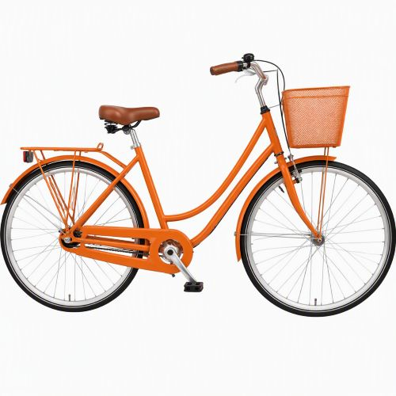
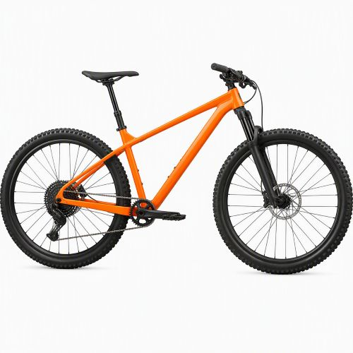
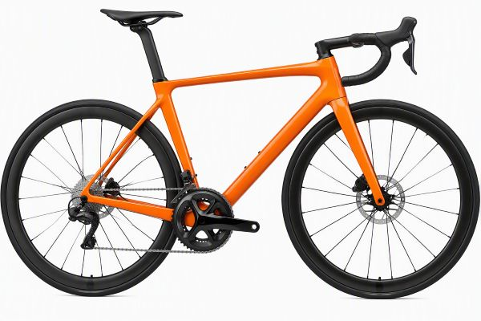
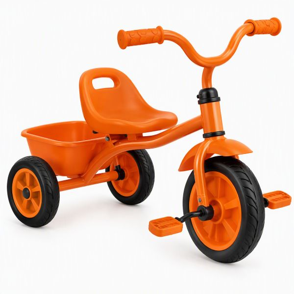

CYKELSERVICE
SERVICE ÅRET OM
STOR
3000 KR
Inkluderar en Mellanservice.
Genomgång av av styrlager, vevlager, växelreglage, styrlinda och styre med eventuell byte.
Behov ses över av luftning av hydrauliska skivbromsar samt riktning av hjul med eventuellt byte av ekrar.
MELLAN
2000 KR
Innehåller en Litenservice.
Genomgång av bromsbelägg, kedja, växel, kassett, länkhjul, växelrör och växel samt
bromsvajer + hölje med eventuellt byte. Smörjning av styrlager.
LITEN
1000 KR
Kontroll av styrstam, styre, sadel, pedaler och skruvar med eventuell åtdragning.
Bromsbelägg ses över med eventuell byte och smörjning av kedja.
BEGANADE CYKLAR TILL SALU
BEGRÄNSAT UTBUD HÖR GÄRNA AV DIG

DAMCYKEL 4000 KR

MOUNTAINBIKE 6000 KR

KLASSISK RACERCYKEL 5000 KR

TREHJULING 1000 KR